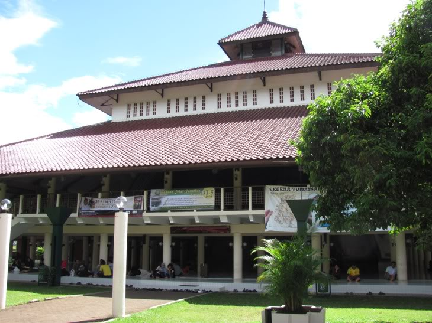
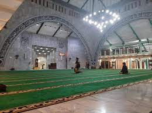

Masjid UI
Masjid UI adalah masjid kampus UI, berada dalam kampus UI, sebagian besar jamaahnya warga UI, pengurusnya diangkat oleh pimpinan UI, dan kegiatan dan programnya berwatak akademis UI sebagai universitas terbaik yang menyandang nama negara.
Masjid UI mulai dibangun 28 Januari 1987 (27 Jumadilawwal 1407 AH) dan digunakan pertama untuk shalat Jum’at tanggal 4 September 1987 (10 Muharam 1408 AH) dengan khatib Prof. HM. Daud Ali, SH, Guru Besar Hukum Islam FHUI.
Masjid UI berdiri di atas sebidang tanah negara di kampus UI Depok yang dibatasi oleh Jl. Prof. Dr. Nugroho Notosusanto di sebelah utara, Jl. Prof. Mr. Djokosoetono di sebelah timur, Danau Kenanga di sebelah selatan, dan lapangan parkir sepeda motor Perpustakaan Crystal of Knowledge di sebelah barat, dengan luas bangunan inti 984,96 M2..
Pendirian Masjid Universitas Indonesia dimaksudkan sebagai sarana pembinaan keimanan dan ketakwaan warga Universitas Indonesia dan masyarakat umum dalam bentuk ibadah kepada Allah Swt, pengkajian dan pengamalan ilmu pengetahuan, serta kegiatan muamalah warga Universitas Indonesia dan masyarakat umum. Tujuannya adalah untuk menumbuhkan, mengembangkan, dan meningkatkan keimanan dan ketakwaan kepada Allah Swt warga Universitas Indonesia khususnya dan jamaah umumya dengan menjunjung tinggi kehormatan dan kesucian agama, akal, jiwa, keturunan, kekayaan intelektual, kebebasan akademik, dan harta benda dalam melaksanakan ibadah dan muamalah.
Dalam 34 tahun usianya, saat ini Masjid UI berada bersama Masjid ARH dalam satu kepengurusan Masjid Universitas Indonesia yang dibentuk dengan SK Rektor UI No. 1073/R/SK/UI 2020 tanggal 31 Agustus 2020 untuk masa jabatan 2020 – 2024. Masa kerja tahun pertama 2020-2021 difokuskan untuk membenahi persoalan administrasi dan keuangan yang selama ini menjadi kendali utama, di samping SDM. Pandemi Covid-19 telah mengubah segalanya, menjadi halangan besar dalam melaksanakan amanah pada masa awal kepengurusan, yang menuntut semua anggota Dewan Pengurus lebih kreatif dalam memanfaatkan kecanggihan teknologi informasi. Namun, keterbatasan SDM serta peralatan dan perlengkapan IT membuat Masjid UI belum dapat melaju dengan semestinya. Hanya dengan do’a dan ikhtiar kami berusaha untuk memenuhi amanah itu.